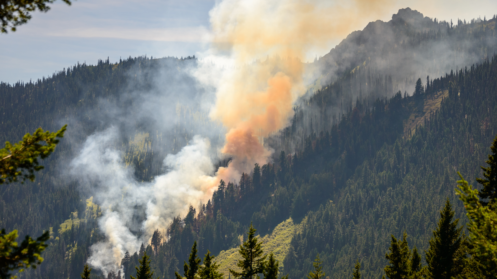
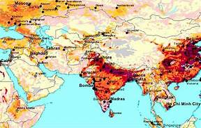
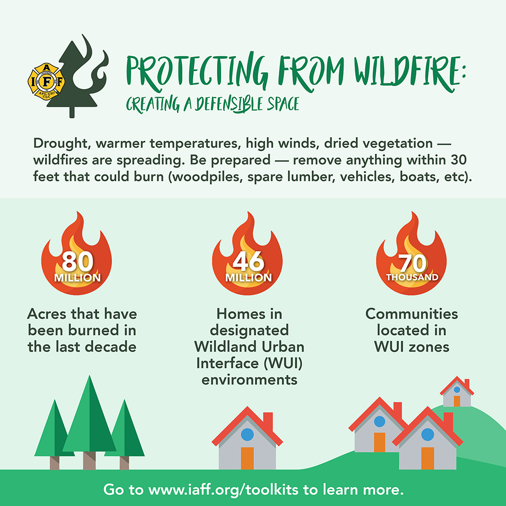

Understanding the causes and dynamics of forest fires is crucial for implementing effective prevention and management strategies. Public education, community involvement, and sustainable land management practices are key components of a comprehensive approach to addressing the challenges posed by forest fires.



About Forest Fire
Firstly, forest fires are a natural and essential part of many ecosystems. They play a crucial role in maintaining the health of forests by clearing away dead vegetation, promoting the growth of new plants, and recycling nutrients. However, when fires occur too frequently or with too much intensity, they can become a serious threat.
Human activities are a significant cause of forest fires. Campfires left unattended, discarded cigarettes, and even intentional acts of arson can ignite wildfires. The spread of fire is also influenced by environmental factors such as drought, high temperatures, and dry conditions, which create a perfect storm for wildfires to rapidly escalate.
The consequences of forest fires are far-reaching. Ecologically, they can lead to the loss of biodiversity, destruction of habitats, and long-term damage to the soil. Economically, forest fires can devastate local communities that depend on forests for their livelihoods, impacting industries such as timber and tourism. Additionally, the smoke produced during fires can pose serious health risks, affecting air quality and respiratory health for both humans and wildlife.
Prevention is a critical aspect of managing forest fires. This involves a combination of responsible human behavior, community engagement, and the use of advanced technologies. Encouraging people to be mindful of their actions in forested areas, implementing early warning systems, and employing firefighting equipment are all part of a comprehensive approach to prevent and mitigate the impact of forest fires.
Government policies and international collaboration are also key components in addressing the forest fire challenge. Regulations and initiatives can help control activities that may lead to wildfires, while global cooperation allows for the sharing of resources, expertise, and technology to effectively manage and prevent forest fires on a larger scale.
Prevention Tips
Campfire Safety:
Always check if campfires are permitted in the area.
Keep campfires small and manageable.
Clear flammable materials away from the fire, creating a safe zone.
Never leave a campfire unattended, and fully extinguish it before leaving.
Discarding Cigarettes:
Dispose of cigarette butts in designated containers, not on the ground.
Avoid smoking in forested areas during dry and windy conditions.
Equipment and Machinery:
Maintain and inspect equipment regularly to prevent sparks.
Avoid operating machinery that may produce sparks on windy days.
Clearing Debris:
Create defensible space around your property by clearing away dead vegetation and debris.
Regularly clean gutters and roofs to remove dry leaves and needles.
Firebreaks:
Consider creating firebreaks, which are cleared areas that can help slow the progress of a wildfire.
Education and Awareness:
Educate communities about the dangers of forest fires and the importance of prevention.
Conduct awareness campaigns on responsible behavior in forested areas.
Report a fire
Incident Overview:
Date, time, and location of the forest fire.
Size of the affected area and any containment efforts.
Cause of the Fire:
Investigation findings regarding the origin and cause of the fire.
Whether it was human-caused, lightning, or another factor.
Weather Conditions:
Weather conditions leading up to and during the fire (temperature, humidity, wind speed, etc.).
How these conditions contributed to the fire's behavior.
and Resources:
Overview of the firefighting response, including the agencies involved.
Types of resources deployed (firefighters, aircraft, equipment).
Evacuation and Shelter Information:
Details on any evacuations ordered and the establishment of shelters.
Number of people affected and the duration of evacuations.
Injuries and Fatalities:
Information on any injuries or fatalities among firefighters, residents, or animals.
Air Quality and Health Impact:
Assessment of air quality during and after the fire.
Health advisories and recommendations for affected communities.
Forest Fire Statistics
Global Trends:
Forest fires have been on the rise globally, with an increase in both frequency and intensity.
Factors such as climate change, prolonged droughts, and human activities contribute to the growing threat.
United States:
In the United States, the number of large wildfires and the area burned has varied from year to year.
Western states, such as California, have experienced significant wildfire activity.
Amazon Rainforest:
The Amazon rainforest in South America has faced increased fire incidents, often linked to deforestation activities, agriculture, and land clearing.
Australia:
Australia has seen severe and widespread bushfires, notably the devastating 2019-2020 bushfire season.
Fire Safety Guidelines
Check Fire Danger Ratings:
Stay informed about local fire danger ratings and adhere to any restrictions or bans.
Campfire Safety:
Only light campfires in designated areas.
Keep the fire small and never leave it unattended.
Completely extinguish the fire before leaving.
Discarding Smoking Materials:
Dispose of cigarette butts in proper containers.
Avoid smoking in forested areas during dry and windy conditions.
Equipment Use:
Maintain and inspect equipment for sparks before use.
Avoid using machinery that may produce sparks on windy days.
Clear Debris:
Create a defensible space around your property by clearing away dead vegetation.
Regularly clean gutters and roofs to remove dry leaves and needles.
Firebreaks:
Consider creating firebreaks to slow the progress of a wildfire.
Community Awareness:
Educate communities about the risks of forest fires and the importance of prevention.
Conduct awareness campaigns on responsible behavior in forested areas.
.jpg)
.jpg)